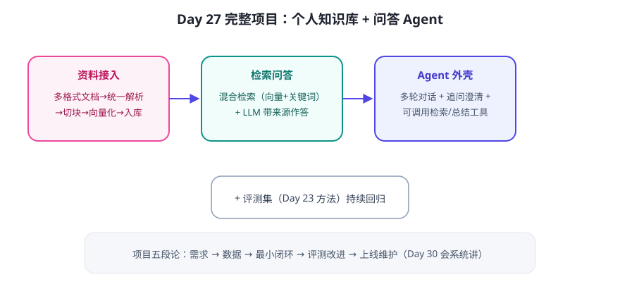

这是把你 26 天所学“焊”成一件作品的日子。目标不是“代码多酷”，而是解决你自己的真实问题——让积累的资料真正能被问起来。
系统组成

分阶段执行表
| 阶段 | 做什么 | 验收标准 |
|---|---|---|
| 0. 范围 | 选 1 类资料（如你的 Markdown 笔记） | 明确支持/不支持的文件类型 |
| 1. 接入 | 读取 → 切块 → 向量化入库 | 能打印出“共 N 块，来自 M 个文件” |
| 2. 检索 | 混合检索 Top-5 | 10 个测试问题都能找回相关块 |
| 3. 问答 | 系统提示词 + 多轮 + 带来源 | 能多轮追问，答案有出处 |
| 4. 评测 | 建 20 条测试集跑分 | 成功率记录在案，能对比前后版本 |
| 5. 打磨 | 按失败案例调切块/提示词/检索 | 至少修好 3 个典型失败 |
系统提示词（知识库问答版）
你是用户的个人知识助手。 1. 只依据下面检索到的片段回答；片段没有就直说“资料里没有”，绝不编造。 2. 每条结论标注来源（文件名/章节）。 3. 用户追问时，结合上一轮上下文，不要重复已说内容。 4. 若问题需要多篇资料综合，先说明“这需要综合以下资料”，再作答。 [检索片段…]
三个“让项目不烂尾”的建议
- 先小后大：先只支持 Markdown，跑顺了再加 PDF/网页；先本地跑通，再谈部署。
- 每天真用：把 Agent 当成日常工具用一周，真实使用会暴露测试集想不到的问题。
- 记录迭代日志：每次改动记一句“改了啥、成功率从多少到多少”——这就是你的作品集亮点。
✍️ 今日练习（约 60 分钟）
- 按上表完成阶段 0–3（至少到“检索问答能跑通”）。
- 写 10 条测试问题并人工打分，记录首次成功率。
- 挑最典型的 3 个失败案例，各想一个改进假设（改切块？改提示词？改检索？）。
📌 今日小结
五阶段范围 → 接入 → 检索 → 问答 → 评测打磨
提示词关键只依据片段 + 没有就说没有 + 标注来源
防烂尾先小后大 · 日常真用 · 迭代留日志
下一步Day 28 把它部署成别人也能访问的服务
明天预告：部署你的 Agent——本地起服务、加一个简单聊天界面，让作品“可展示”。